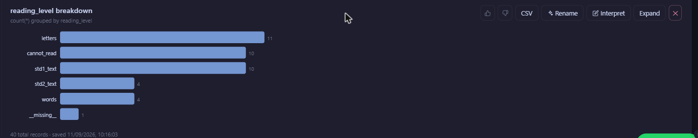

Every panel study loses respondents between waves — that much is universal. What makes attrition the central risk in Indian panel studies specifically is not that it happens, but why and how it happens: the same social and economic patterns that make India's rural and peri-urban population dynamic and resilient are precisely the patterns that break the conventional "call the phone number on file" re-contact model. This article looks at three India-specific drivers of attrition, three practical re-contact strategies that respond to them directly, and how to report attrition honestly once it happens.
This is a companion piece to our full panel study guide, which covers the broader field strategy — GPS tagging, community informant networks, wave-status tracking, and the statistical tests for differential attrition. Here, we go deeper on the specific mechanics of why respondents go missing in the Indian context, and how to structure re-contact and reporting around that reality rather than a generic playbook.
Why Attrition Is the Central Risk in Indian Panel Studies
Seasonal Labour Migration
India's rural economy runs on seasonal and circular migration at a scale that panel study designs from other contexts don't anticipate. A construction labourer, brick-kiln worker, or agricultural wage earner surveyed at their home village in January may be working in a different state entirely by April, returning only around major festivals or during the sowing season. This is not a rare edge case in most rural samples — it is a predictable, recurring feature of the household economy. If your endline or Wave 3 fieldwork window doesn't account for this, you will lose a specific, non-random slice of your sample: disproportionately young, male, and from lower-income households, which is exactly the profile most likely to be affected by many livelihood and anti-poverty interventions. The migration itself isn't the research problem — missing it systematically, and not correcting for it, is.
Phone-Number Churn and Multi-SIM Ownership
India's mobile market is defined by cheap prepaid SIMs, frequent promotional switching between operators, and a meaningful share of respondents carrying two or more active numbers — one for calls, one for data, one tied to a specific employer or location. A phone number collected at baseline has a real probability of being disconnected, reassigned to a different subscriber, or simply abandoned by the time you attempt re-contact 12 or 18 months later. Worse, a "wrong number" response from someone who picked up a reassigned SIM can be mistaken for a refusal or a lost respondent, when in fact your actual respondent is reachable — just not through the number on file.
Joint-Family Household Composition Changing Between Waves
Many Indian households are structured as joint families, where composition shifts through the natural life-cycle: a son's family splits off to form a new household after marriage, a widowed parent moves in with a different child, a daughter-in-law's natal family absorbs her temporarily during a dispute or a pregnancy. When your baseline unit of observation was "the household at this address," but the household has since split, merged, or been reconstituted, you face a genuine identification problem: is this still the same panel unit? Did the specific individual respondent move to a new household, and should you follow them, or does the panel unit stay tied to the original address regardless of who lives there now? Studies that don't resolve this question explicitly at baseline tend to resolve it inconsistently in the field — different enumerators making different calls — which quietly corrupts the panel's continuity.
Migration, SIM churn, and household splits all break re-contact methods that rely on a single static piece of information. Redundancy in how you identify and locate a respondent is not a nice-to-have — it is the only defence against all three at once.
Practical Re-Contact Strategies
Collect Two Phone Numbers Plus a Stable Third-Party Reference Contact at Baseline
A single phone number is a single point of failure. At minimum, collect the respondent's own number and a second number — a spouse, adult child, or other household member likely to remain reachable even if the respondent migrates. Beyond that, capture a third-party reference contact who is not a household member at all: someone structurally unlikely to move with the household and likely to know its whereabouts regardless of what happens to it — a shopkeeper the family deals with regularly, a schoolteacher, a local self-help-group coordinator, or an ASHA or Anganwadi worker who knows the area well. This third contact becomes your fallback exactly when household-internal contacts have also gone stale, which is precisely the scenario where a single-number approach fails hardest.
Track by Village or Ward Identifiers, Not Phone Number Alone
Phone numbers and even names are volatile; administrative geography is comparatively stable. Anchor every respondent record to a village or urban ward identifier — ideally matched to Census or local government administrative codes — independent of the household's current address or contact details. When a respondent can't be reached by phone, this geographic anchor is what lets a field team physically re-locate the panel unit: go to the village, ask the current occupants or neighbours what happened to the household that used to live there, and follow the trail from a fixed point rather than a moving one. For studies spanning multiple districts, standardising on a consistent village/ward coding scheme from Wave 1 also makes attrition analysis by geography possible later — you can ask whether attrition clusters in particular villages, which often signals something worth investigating (a local shock, an uncooperative gatekeeper, a field team performance issue).
Stagger Re-Contact Attempts Around Known Migration Seasons
Rather than fielding every wave on a fixed calendar interval regardless of what that date falls on, build your re-contact schedule around the migration calendar of your specific study population. If your sample includes construction or brick-kiln labour migrants, the post-monsoon and pre-harvest months typically see the highest outmigration; timing fieldwork around major festivals (when migrants often return home) or during the agricultural periods when farm labour demand keeps people local can substantially reduce the "not found" rate on a first visit. Where migration timing is heterogeneous within your sample, a staggered approach — attempting first contact for known migration-prone households earlier or later than the rest of the sample — captures more of the population than a single fixed-date sweep.
How Attrition Reporting Works Analytically
Collecting better contact information reduces attrition; it doesn't eliminate it, and any residual attrition needs to be reported honestly rather than left implicit in a shrinking sample size. Two analyses matter most for day-to-day monitoring during fieldwork, ahead of the more formal differential-attrition tests covered in our panel study guide.
Attrition Rate by Wave
The most basic and most important number: of the respondents successfully interviewed in the previous wave, what percentage were re-interviewed in the current wave? Tracking this wave-over-wave, rather than only computing cumulative attrition against baseline, tells you whether attrition is accelerating, stable, or improving as your field team gains experience with the sample.
| Wave | Sample Interviewed | Wave-on-Wave Attrition | Cumulative Attrition (vs Baseline) |
|---|---|---|---|
| Baseline (Wave 1) | 1,250 | — | — |
| Wave 2 | 1,110 | 11.2% | 11.2% |
| Wave 3 (Endline) | 1,005 | 9.5% | 19.6% |
Attrition by Demographic Subgroup
An overall attrition rate can look perfectly acceptable while hiding a serious bias problem underneath. The essential second step is breaking that same rate down by subgroup — treatment vs control arm if applicable, but also by gender, age band, income tercile at baseline, migration status, and any other characteristic plausibly linked to both attrition and your outcome of interest. If attrition among lower-income households runs at 28% while higher-income households show 9%, your endline sample is no longer representative of your baseline sample, and any outcome comparison needs to account for that — through re-weighting, bounding, or, at minimum, an explicit caveat in your findings. Catching this pattern early, wave by wave, is far more useful than discovering it during final analysis when the fieldwork budget is already spent.

FG Analyzer's Panel Study tab is built for exactly this recurring comparison — it sits alongside the Tabulator tab used for general cross-tabulation, but is structured around respondent continuity across waves rather than a single survey snapshot. Instead of manually recomputing attrition rates in a spreadsheet after every field round, the same subgroup breakdown (arm, gender, income band, migration status) can be applied to retention and attrition automatically as each wave's submissions sync in, giving your field team a live view of where attrition is concentrating while there is still time to intervene with re-contact.
Deciding the Household-Split Rule Before Fieldwork, Not During It
The joint-family composition problem deserves a design decision made before Wave 1 closes, not one improvised in the field by whichever enumerator happens to encounter it first. There are two defensible approaches, and either can work — what matters is picking one and applying it consistently across the whole sample. The first ties the panel unit to the original respondent: if the individual who answered your baseline survey has moved to a new household, your Wave 2 team follows that person to their new address, even if it means tracking someone out of the original study village entirely. The second ties the panel unit to the original household or dwelling: whoever now occupies that address, or whoever remains of the original household there, becomes your Wave 2 respondent, and anyone who split off is treated as an attriter from that unit's perspective (though they may still be reachable as a separate tracking case if your design calls for it).
Neither rule is free of complications. Following individuals gets expensive and can pull your field budget toward unplanned locations; anchoring to the dwelling means you may lose the specific person whose outcome you actually care about (the working-age son who received a livelihood training, for instance, if he splits off to a new household after marriage). Most well-designed panel studies land on a hybrid: follow the primary respondent as an individual if the split happens within the same village or a reasonable travel radius, and record — but do not chase indefinitely — splits that move the respondent out of the study area. Whatever the rule, write it into your field manual with concrete examples, because "use your judgement" is exactly the instruction that produces inconsistent decisions across a large enumerator team.
A Quick Re-Contact Protocol Checklist
For the broader set of field strategies — GPS-tagged last-known locations, community informant networks, structured callback scheduling, and the formal statistical tests for differential attrition (Lee bounds, inverse probability weighting) — see our full panel study guide. This piece is meant to sit alongside it: the guide covers the field playbook end to end, while this article goes deeper on why India's specific social and economic patterns demand that playbook in the first place.
Track Panel Continuity, Not Just Survey Rounds
FieldGovern's respondent registry and Analyzer Panel Study tab keep every wave connected to the same respondent — with live attrition and subgroup reporting built in. Start a free trial to see it on your own panel design.
Start Free Trial